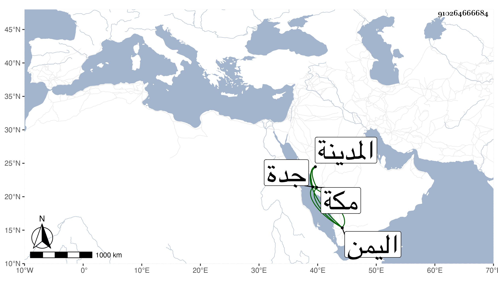

0902Sakhawi.DawLamic.ITO20230111-ara1.EIS1600.910264666684
Biography ID: 910264666684
910
عبد اللطيف بن عبد الملك بن عبد اللطيف التاج بن الجيعان أخو المحب أبي البقاء محمد الآتي وأبوهما ، ولد في صفر سنة سبع وثلاثين وثمانمائة بدرب ابن ميالة من بركة الرطلي وحفظ بعض القرآن ، واستقر في المباشرة بأوقاف الظاهر برقوق والناصر ، وفي الاستيفاء بأوقاف الزمام فيما تلقاه شريكا لأخيه عن أبيه ، وبرع في المباشرة خطا وحذقا ، وحج صحبة أبي البقاء بن الشرفي حين توجه لأصلاح المدينة وله المام بكتب الأدب وهو ممن رسم عليه لأوقاف الزمام ثم خلص هو وأخوه ، فسافر أخوه لمكة فحج ثم سافر إلى اليمن ، فلم يلبث أن مات وأما هذا فمات بالطاعون في سنة سبع وتسعين فكانا في سنة واحدة عفا الله عنهما وسافر في أثناء ذلك بحرا مع نائب جدة فجاور بقية سنته ورجع بعد الانفصال عن الموسم سنة ست وتسعين لبلاد اليمن فمات بها في ربيع الأول من التي تليها رحمه الله .
